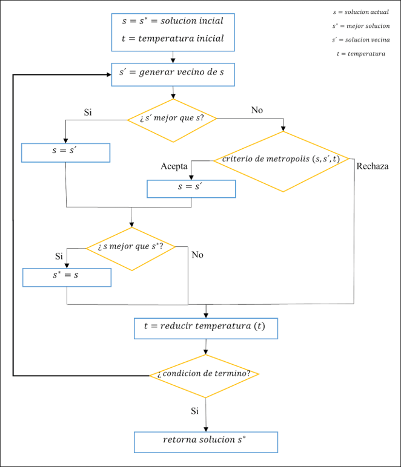

El concepto del Recocido Simulado (Simulated Annealing) fue introducido a inicios de
los años 80 por Kirkpatric y Vecchi, el cual fue inspirado en el proceso físico de enfriamiento
de metales con el fin de llegar al equilibrio térmico, durante este tratamiento se logra alterar las
propiedades físicas de los materiales al calentarse a altas temperatura y luego enfriarlos de
manera controlada.
La metaheurística es de tipo trayectoria, teniendo como característica evitar el
estancamiento de soluciones a nivel local, esto se logra mediante la aplicación de un criterio de
aceptación denominado criterio de metrópolis, el cual permite la aceptación de una solución no
necesariamente mejor a la actual, aumentando de esta forma el espacio de búsqueda. Para aplicar
Simulated Annealing es necesario definir un movimiento (heurística perturbativa) que permitirá
generar soluciones a partir de otras.
Pseudocódigo
El procedimiento de ejecución del algoritmo se rige por las siguientes operaciones:
-
El proceso comienza con la generación de una solución inicial, el cual será el punto de
inicio y comparación con la siguiente solución generada.
-
La solución actual, representada por la variable (s), al principio será la solución inicial,
de igual forma conlleva la implicación que será la mejor solución encontrada (s*).
Además, se define la variable temperatura, la cual idealmente tendrá un valor alto,
simulando la temperatura máxima que alcanza un metal (t).
-
En cada iteración, se realiza un movimiento aleatorio con el fin de encontrar un vecino
de la solución actual, declarado como (s').
-
En este punto se pueden generar dos situaciones al comparar la solución actual y el
vecino generado:
-
Si el nuevo vecino generado (s'), presenta un mejor valor en comparación a la
solución actual (s), el vecino se convertirá en la nueva solución actual.
-
Si el vecino (s') no presenta un mejor valor respecto a la solución actual (s), se
aplica el criterio de metrópoli:
-
Si se acepta el criterio, la solución actual será determinada por el vecino
generado.
-
Si se rechaza, se descarta el vecino generado.
-
En caso de que la solución actual (s) tenga un valor óptimo al compararlo con la mejor
solución (s*), el valor de este último será reemplazado por el primero.
-
Al finalizar la iteración, la temperatura disminuirá dependiendo el esquema de
enfriamiento seleccionado.
-
En caso de cumplir el criterio de término del algoritmo, se retornará la mejor solución
(s*), en caso contrario se repite el proceso a partir del paso 3.
Con el fin de facilitar la comprensión del algoritmo, se presenta un diagrama de flujo:
